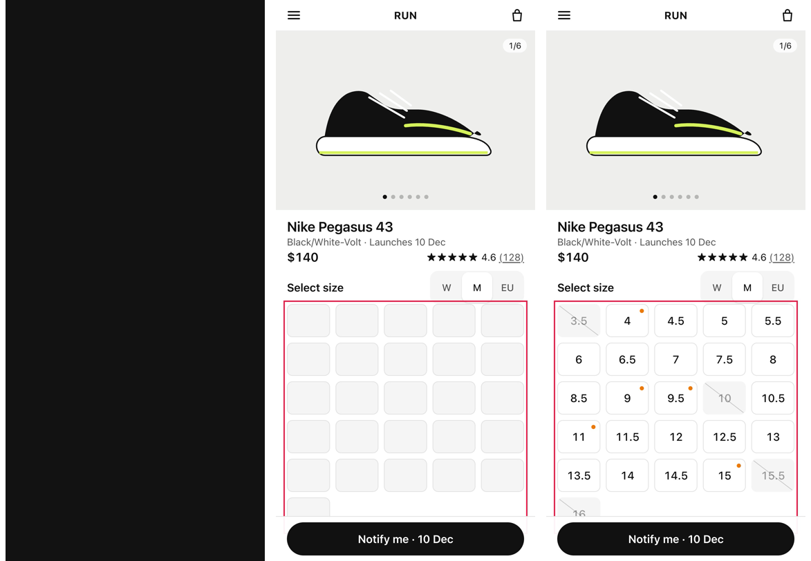
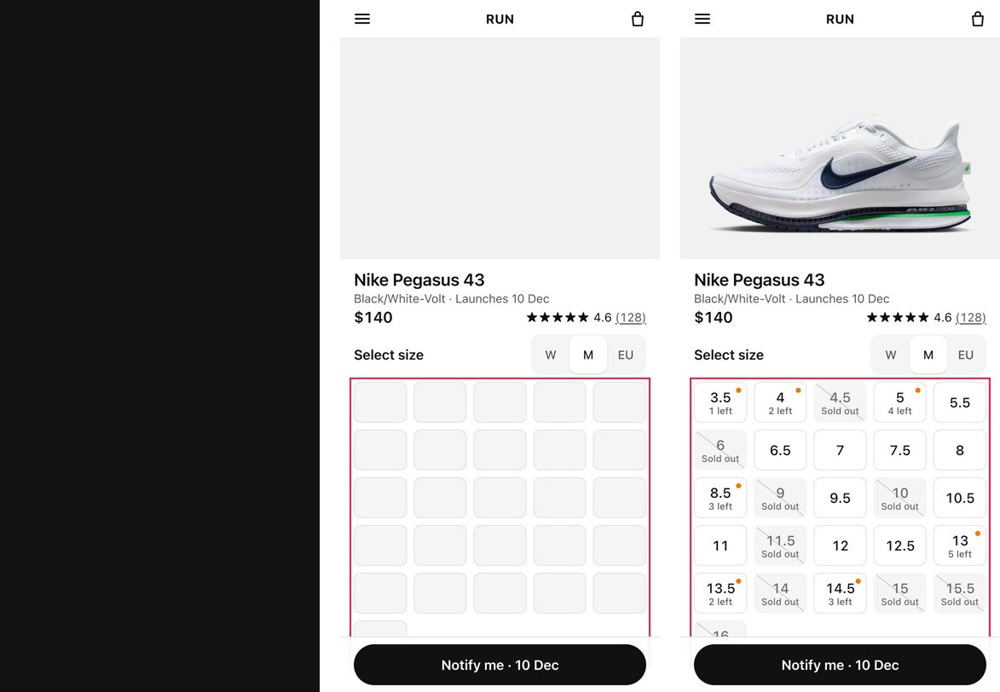

Pegasus 43 phone page
A product page for the Nike Pegasus 43 (Black/White-Volt, $140, launches 10 Dec 2026), built for a 375 px phone in Next.js and Tailwind.
- Live page: web-indol-ten-52.vercel.app
- Code: github.com/harikrsh10/nike-pegasus-phone-page. Most of the page is in ProductPage.tsx.
- Prompt and setup for the launch and the Lighthouse test: prompt.md
The thing I cared about most is the size grid. If it moves while the page loads, someone reaching for M 10 taps M 9.5. Most of the layout decisions below exist to keep it still.
Speed budget
speed-budget.json is at the repo root:
{
"performance_score_min": 95,
"size_grid_shift_px_max": 0,
"size_button_min_px": 44
}These are the three keys the Web Platform Slow 4G mobile check profile asks for. The profile rejects extra keys, so the throttle settings live in the check, not here. The profile's minimum score is 90; the page scored 99, so I set the floor at 95.
| Key | Value | Profile minimum | Measured |
|---|---|---|---|
performance_score_min | 95 | 90 | 99 to 100 on the live page |
size_grid_shift_px_max | 0 | 0 | 0 px |
size_button_min_px | 44 | 44 | 48. Every size button is 62 × 48, sold-out ones too. |
The check finds elements by data-testid. All five are on the page:
data-testid | On | Count |
|---|---|---|
size-grid | The size grid. The empty grid shown while the page streams uses the same testid; only one is ever on the page. | 1 |
size-button | Each size you can buy | 17 |
size-button-sold-out | Each sold-out size | 9 |
main-photo | The first photo | 1 |
price | The $140 price | 1 |
Checked on every deploy
Every production deploy is checked against this file. Vercel posts a status on each commit; when it turns green for main, the Speed budget workflow runs check.mjs on the live URL. That runs Lighthouse with the same settings as the saved report for the score, then loads the page once more under the same throttling, sampling the grid's position every frame and measuring the smallest size button. The result goes on the commit as a "Speed budget" status: green within budget, red if any key fails, with the numbers in the run summary and the Lighthouse report attached.
Before turning it on I made it fail on purpose twice: once on a test page where the grid jumps 40 px after load, and once with a budget that asked for 50 px buttons. Both runs failed on the right key and exited non-zero.
Slow-phone trace, 24 Nov 2026
I traced the production build in Chrome at 375 × 812 CSS px, 3x pixel density, with a 4x CPU slowdown. The profile gives two network settings, so I ran three fresh loads at each: 150 ms round trip at 1638.4 kbps, and 562.5 ms per request at 1474.56 kbps.
0 layout shifts in every run.
The top of the size grid stayed at 440 px from first paint to fully loaded.

- Page load in 4x slow motion and at real speed
- trace.json. Open it in Chrome DevTools, Performance tab.
- results.json, every run
- record.mjs, the script that made the recording
Rerun with the real photo
Since then the page has an 8 px gap between the size switch and the grid, which puts the grid at 448 px, and the drawn shoe is now a real photo. I ran all six loads again on that build.
0 layout shifts in every run.
The top of the size grid stayed at 448 px from first paint to fully loaded.

Files: trace.json, results.json.
What could push the grid down, and what stops it
| Loads late | Watched as | What keeps the grid still |
|---|---|---|
| The shoe photo | main-photo | A fixed 260 px box. The photo is next/image with fill, so it takes the box's size, not its own. It's preloaded with high fetch priority; a phone at 3x gets a 1200 px WebP of about 23 KB. |
| The price, or a web font for it | price | The page uses the phone's system fonts, so there's no font swap. Name, colorway, price and rating sit in a fixed 88 px block. |
| The W / M / EU switch and "Select size" row | size-grid top | A fixed 48 px row, then a fixed 8 px gap. |
| The sizes, which stream in after the page shell | size-grid | The shell already has 26 empty boxes of the same size in the same places. The numbers fill them in. |
| The "Only 3 left" line | size-grid top | A fixed 32 px line that's always there; only its text changes. It's under the grid, so it couldn't push it anyway. |
| The sticky "Notify me" bar, sheets and the photo gallery | size-grid top | They sit on top of the page and take up no room in it. |
With the photo in, main-photo is the largest thing on the first screen, as the profile expects. One thing is still open: the photo shows a white, navy and green colorway, while the page sells Black/White-Volt. It should be swapped for a Black/White-Volt shot before launch. The box and the checks won't need to change.
Lighthouse on the live page
Mobile Lighthouse 12.8.2 on the Vercel URL, with the profile's settings, on 24 Nov 2026:
| Performance | Accessibility | Best practices | SEO |
|---|---|---|---|
| 99 | 100 | 100 | 100 |
That's with the real photo. First contentful paint 1.2 s, largest contentful paint 1.8 s (the photo), total blocking time 40 ms, layout shift 0. Performance moves a point between runs; before the photo, three runs in a row gave 99, 99 and 100.
The first run scored 96 for accessibility. The small grey text under the fit scale and on the review bylines was #8a8a8a, 3.45:1 on white. It's now #6b6b6b, at 5.3:1. I also added "Sold out" and "N left" under the size numbers, so stock isn't shown by colour alone. The buttons stayed 62 × 48.
Read the report, or get the JSON and the settings.
Working with Claude Code
The prompt that set up the trace:
record the loading of the page in a pretend slow font using Chrome Dev Tools MCP. The font screen needs to be 375 x 812 CSS px viewport at 3x pixel density. The slowness should be a 4x CPU slowdown, 150 ms round trip, and we will be looking at the size grid of the size selection so that it's not jumping around and it is staying still. Also the network speed needs to be 1638.4 kbps so that the phone is slow 4G.
What I checked or changed
- The first
speed-budget.jsonheld the throttle settings instead of the profile's three keys. I compared it with the profile and had it rewritten, and renamed the repo tonike-pegasus-phone-pageto match. - The page scored 99, so I raised
performance_score_minfrom 90 to 95. I left the grid shift at 0 px and the buttons at 44 px.
Claude Code read "font" in my prompt as "phone", which is what I meant. Chrome DevTools MCP wasn't installed when I asked, so it drove Chrome through Puppeteer with the same DevTools throttling calls; I've added the MCP since. It added the five data-testids, and it noticed that the profile's header and its Lighthouse block give different network numbers, which is why both were run. Both gave 0 px.